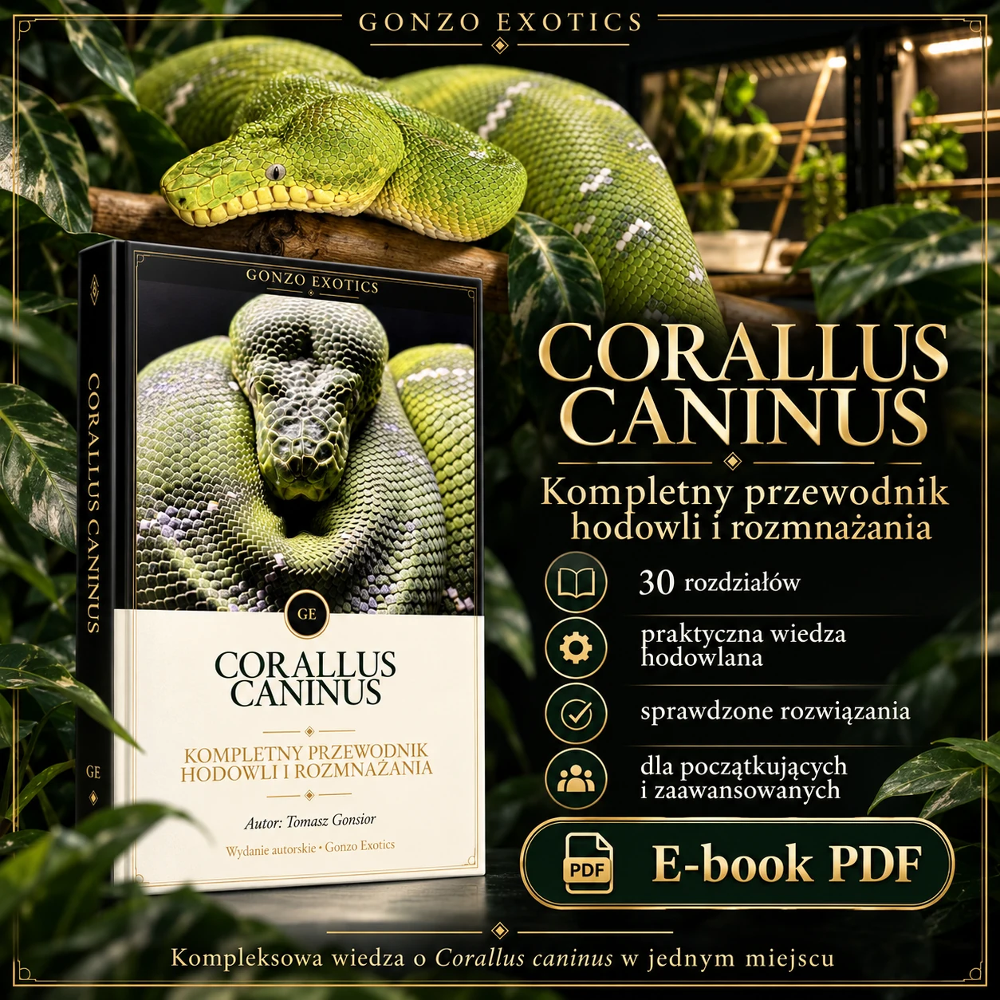
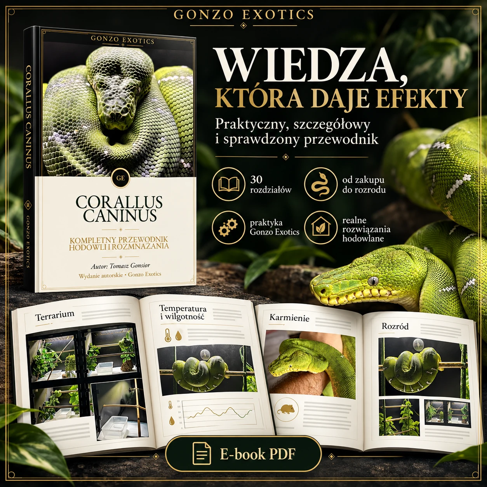
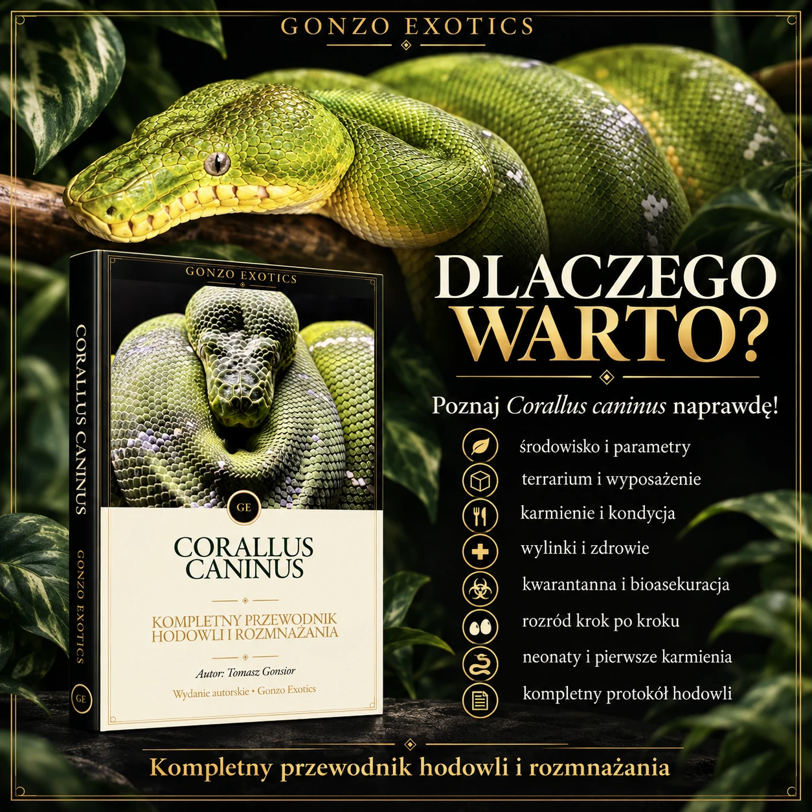

Gatunek i przygotowanie
Wymagania gatunku, odpowiedzialność opiekuna i ocena własnego przygotowania.
GONZO EXOTICS • E-BOOK PDF
Praktyczny przewodnik dla osób, które chcą świadomie prowadzić hodowlę Corallus caninus — od przygotowania terrarium po pracę z dorosłą parą i młodymi.
49,99 złpłatność realizowana w zewnętrznym koszyku
KUP E-BOOK — 49,99 ZŁ
O PRZEWODNIKU
Ten e-book powstał z myślą o realnej pracy przy zwierzętach: obserwacji, dokumentowaniu zmian i podejmowaniu decyzji na podstawie kondycji oraz warunków, a nie jednego schematu dla wszystkich.
Znajdziesz tu kwestie, które wracają w codziennej hodowli — projekt terrarium, światło i mikroklimat, karmienie, kontrolę zdrowia, kwarantannę oraz kolejne etapy rozrodu. Treść nie zastępuje konsultacji weterynaryjnej ani indywidualnej oceny zwierzęcia.
ZAWARTOŚĆ
Przewodnik prowadzi przez najważniejsze obszary hodowli i rozrodu Corallus caninus.
Wymagania gatunku, odpowiedzialność opiekuna i ocena własnego przygotowania.
Zdrowie, pochodzenie, dokumentacja i pytania przed zakupem.
Przestrzeń, żerdzie, kryjówki, woda, zabezpieczenia i organizacja zbiornika.
Temperatura, fotoperiod, UVB, wentylacja, wilgotność i okresy przesychania.
Dobór pokarmu, częstotliwość, obserwacja sylwetki i reakcje zwierzęcia.
Monitorowanie kondycji, objawy wymagające uwagi i granice samodzielnej oceny.
Bioasekuracja, obserwacja nowego zwierzęcia i ograniczanie ryzyka w kolekcji.
Przygotowanie pary, łączenie, obserwacja sezonu, poród i regeneracja samicy.
Pierwsze etapy odchowu oraz porządkowanie informacji z hodowli.

MASZ JUŻ PODSTAWY?
DLA KOGO
Jeśli rozważasz zakup, uporządkujesz pytania o warunki, zdrowie, pochodzenie i odpowiedzialność przed podjęciem decyzji.
Jeśli masz już zwierzę, łatwiej ułożysz obserwacje dotyczące środowiska, żywienia, wylinki, kondycji i dokumentacji.
Jeśli pracujesz z parą, znajdziesz uporządkowany opis przygotowania, łączenia, obserwacji, porodu i odchowu młodych.
FORMAT I DOSTĘP
Publikacja jest przygotowana do czytania na komputerze, tablecie i telefonie. Po zakupie przechodzisz przez zewnętrzny koszyk 1koszyk, gdzie wybierasz dostępną metodę płatności.
PDF sprawdzi się także wtedy, gdy chcesz wrócić do konkretnego rozdziału lub wydrukować wybrane strony na własny użytek.

CORALLUS CANINUS
171 stron uporządkowanej wiedzy w formacie PDF.
49,99 zł
KUP E-BOOK — 49,99 ZŁPrzycisk prowadzi do zewnętrznego koszyka 1koszyk. Zakup, płatność i udostępnienie pliku są realizowane w tym systemie.
FAQ
Dla osób przygotowujących się do opieki nad Corallus caninus, opiekunów już pracujących z tym gatunkiem oraz hodowców planujących rozród.
To e-book w formacie PDF, przeznaczony do czytania na komputerze, tablecie i telefonie.
Nie. E-book ma charakter edukacyjny i nie zastępuje diagnostyki, badania zwierzęcia ani porady lekarza weterynarii zajmującego się gadami.
Po kliknięciu przycisku przejdziesz do zewnętrznego koszyka 1koszyk. Tam zobaczysz szczegóły realizacji zamówienia i dostępne metody płatności.